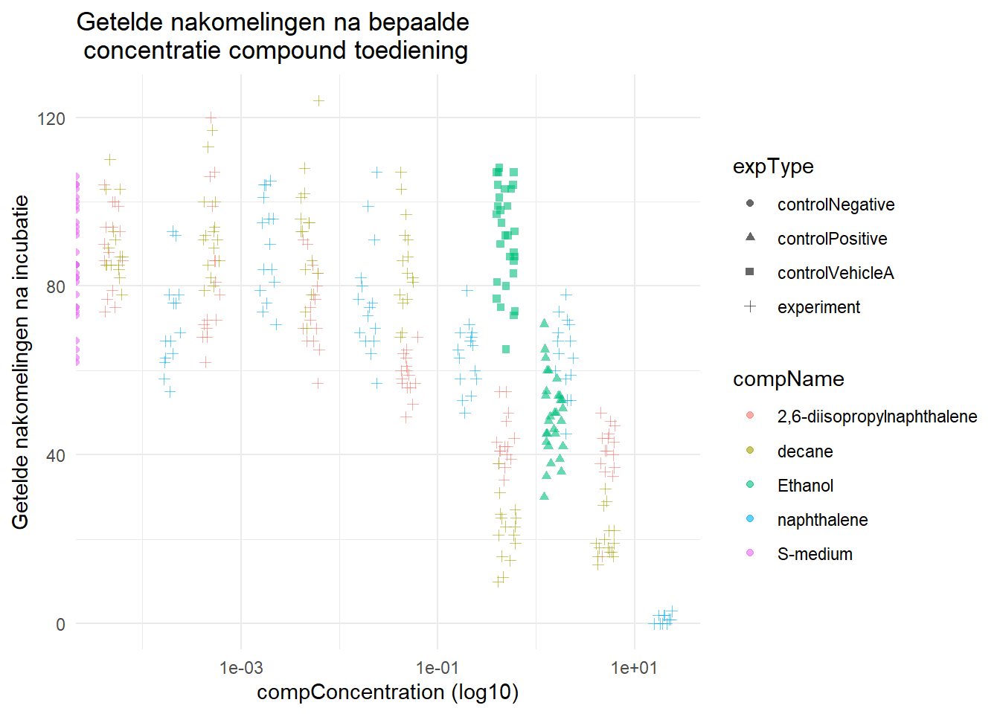

Chapter 3 C.elegans
## Error in install.packages : Updating loaded packages## # A tibble: 6 × 34
## plateRow plateColumn vialNr dropCode expType expReplicate expName
## <lgl> <lgl> <dbl> <chr> <chr> <dbl> <chr>
## 1 NA NA 1 a experiment 3 CE.LIQ.FLOW.062
## 2 NA NA 1 b experiment 3 CE.LIQ.FLOW.062
## 3 NA NA 1 c experiment 3 CE.LIQ.FLOW.062
## 4 NA NA 1 d experiment 3 CE.LIQ.FLOW.062
## 5 NA NA 1 e experiment 3 CE.LIQ.FLOW.062
## 6 NA NA 2 a experiment 3 CE.LIQ.FLOW.062
## # ℹ 27 more variables: expDate <dttm>, expResearcher <chr>, expTime <dbl>,
## # expUnit <chr>, expVolumeCounted <dbl>, RawData <dbl>, compCASRN <chr>,
## # compName <chr>, compConcentration <chr>, compUnit <chr>, compDelivery <chr>,
## # compVehicle <chr>, elegansStrain <chr>, elegansInput <dbl>,
## # bacterialStrain <chr>, bacterialTreatment <chr>, bacterialOD600 <dbl>,
## # bacterialConcX <dbl>, bacterialVolume <dbl>, bacterialVolUnit <chr>,
## # incubationVial <chr>, incubationVolume <dbl>, incubationUnit <chr>, …De RawData is van data type double en compName en compConcentration zijn van data type character. RawData wordt gezien als type integer, deze moet dus omgezet worden. compName is goed als character en compConcentration moet als numerieke waarde.
 De positieve en negatieve controle De positieve controle voor dit experiment is ethanol. De negatieve controle voor dit experiment is S-medium.
3.1 Analyse plan
Data-inspectie: - Begin met het laden van het dataset en inspecteer de structuur ervan. - Controleer op ontbrekende waarden, uitschieters of andere kwaliteitsproblemen in de data.
Beschrijvende statistieken: - Bereken en visualiseer beschrijvende statistieken voor belangrijke variabelen (bijv. gemiddelde, mediaan, standaardafwijking) om een eerste begrip van de data te krijgen.
Exploratieve Data-analyse (EDA): - Maak verkennende visualisaties, zoals boxplots, om de verdeling van het aantal nakomelingen bij verschillende concentraties en voor verschillende verbindingen te observeren. - Gebruik scatterplots om de relatie tussen het aantal nakomelingen en de concentratie van de verbinding te visualiseren.
Dosis-Respons Analyse: - Voer een dosis-responsanalyse uit met behulp van een log-logistiek model om parameters zoals maximale respons, minimale respons, IC50-concentratie en de helling bij IC50 te schatten. - Gebruik een geschikt statistisch pakket of bibliotheek, zoals het {drc}-pakket in R, om de analyse uit te voeren.
Vergelijk Verbindingen: - Vergelijk de geschatte dosis-responscurves voor verschillende verbindingen om mogelijke verschillen in de IC50-waarden te identificeren. - Gebruik statistische tests of betrouwbaarheidsintervallen om de significantie van waargenomen verschillen te beoordelen.
Hypothesetoetsing: - Formuleer hypothesen om te testen of er een significant effect is van de concentratie van de verbinding op het aantal nakomelingen. - Maak gebruik van geschikte statistische tests (bijv. ANOVA) om de significantie van de waargenomen effecten te beoordelen.
Post-hoc Analyse: - Als er meerdere verbindingen zijn, overweeg dan post-hoc tests om specifieke paren van verbindingen te identificeren die significant van elkaar verschillen. - Pas aan voor meervoudige vergelijkingen indien nodig, om de familie-wise foutenmarge te beheersen.
Validatie van het Model: - Valideer het dosis-responsmodel door de geschiktheid van de pasvorm te controleren met behulp van diagnostische plots en statistische tests. - Beoordeel de betrouwbaarheid en nauwkeurigheid van de voorspellingen van het model.
Interpretatie: - Interpretatie van de resultaten in de context van de doelstellingen van het experiment. - Bespreek de biologische betekenis van waargenomen effecten en verschillen in dosis-responscurves tussen verbindingen.
Rapportage: - Bereid een uitgebreid rapport voor waarin de analyse wordt samengevat, inclusief visualisaties, statistische resultaten en interpretaties. - Communiceer duidelijk eventuele bevindingen met betrekking tot het effect van concentraties en verschillen in dosis-responscurves tussen verbindingen.